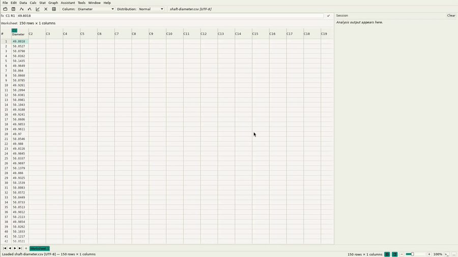
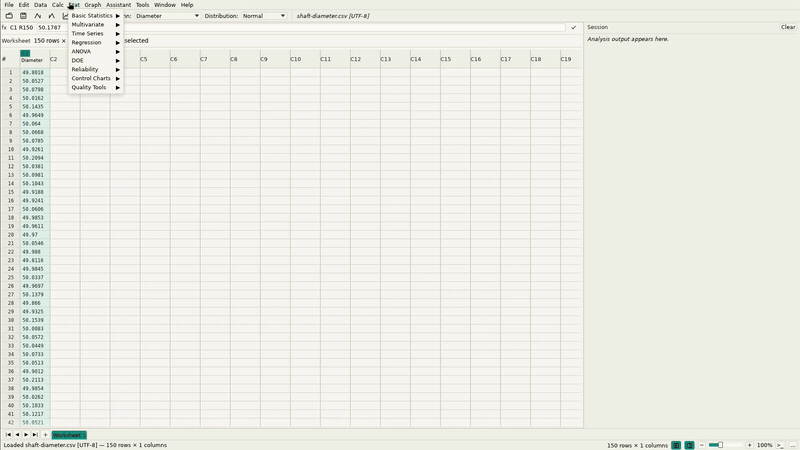
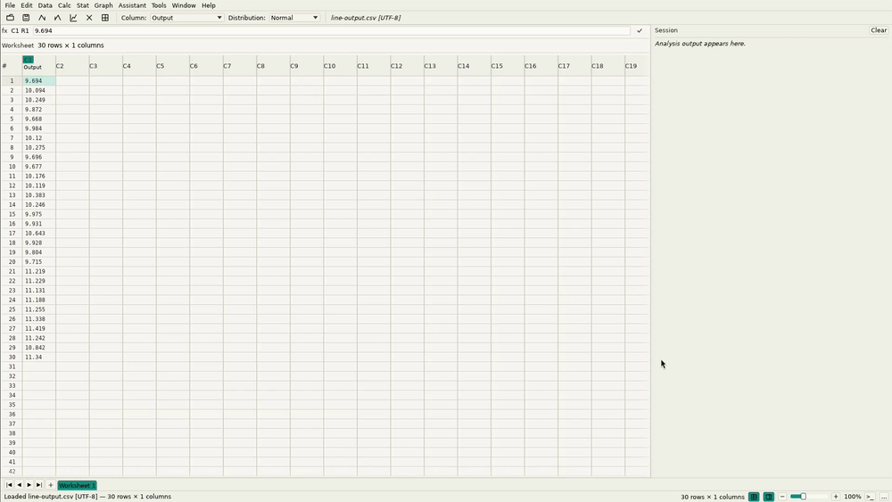

Statistics you can check by hand.
Free desktop statistics in Rust: worksheet, quality tools, control charts, one file.

- Licence
- MIT
- Runs on
- Windows x86-64
- Runs on
- Raspberry Pi 4 and 5
- Latest
- v0.1.1
Watch it work.
Silent screen recordings of the real application. Nothing staged: data, menus and reports as they are.




Worksheet, analyses, report.
An editable worksheet
Paste or import CSV, Excel and FreePlots projects. Sort, subset, format columns, rename columns and undo. Dates stay dates, missing values stay missing.
Quality and process tools
Capability with normal and non-normal fits, gauge R&R, linearity, attribute agreement, Pareto, tolerance intervals and distribution comparison.
Control charts
I-MR, X-bar and R, X-bar and S, EWMA, CUSUM, P, NP, C, U and G charts, with the tests for special causes and the signals listed in the report.
Design of experiments
Two-level factorials, Plackett-Burman, Box-Behnken and central composite designs, with factorial, response-surface and Taguchi analyses and a response optimizer.
Reports you can hand over
Every analysis writes a typed report to the Session. Export the Session as PDF or HTML, or copy the graph as SVG, PNG or JPEG.
Small and portable
One executable, no installer and no administrator rights. No account, no telemetry and no network access. Settings live next to the program.
What is inside today.
Statistics
- Descriptive statistics, by group
- Probability plots: 10 distributions
- Anderson-Darling, Kolmogorov-Smirnov, Ryan-Joiner, D’Agostino-Pearson normality tests
- t tests, equivalence, proportions and variances
- Mann-Whitney, Wilcoxon, Kruskal-Wallis, Friedman, Mood, sign tests
- Correlation, partial correlation, chi-square, Grubbs, tolerance intervals, Box-Cox
Modelling
- Regression: multiple, stepwise, ordinal, Poisson, binary logistic
- ANOVA: one-way, two-way, equal-variance tests
- PCA, k-means, Hotelling T-squared
- Moving average, decomposition, Holt-Winters
- Reliability: ALT, step-stress, Kaplan-Meier, censored fits
- Curve fitting and distribution comparison
Get version 0.1.1.
One file per system. No installer, no account.
Download for Windows Download for Raspberry Pi
All releases live on GitHub Releases. Source and build instructions ship in the repository.